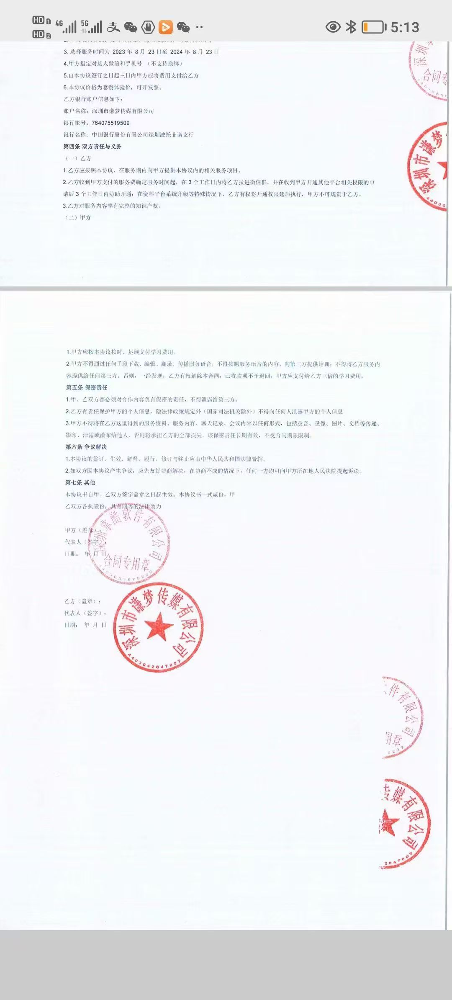
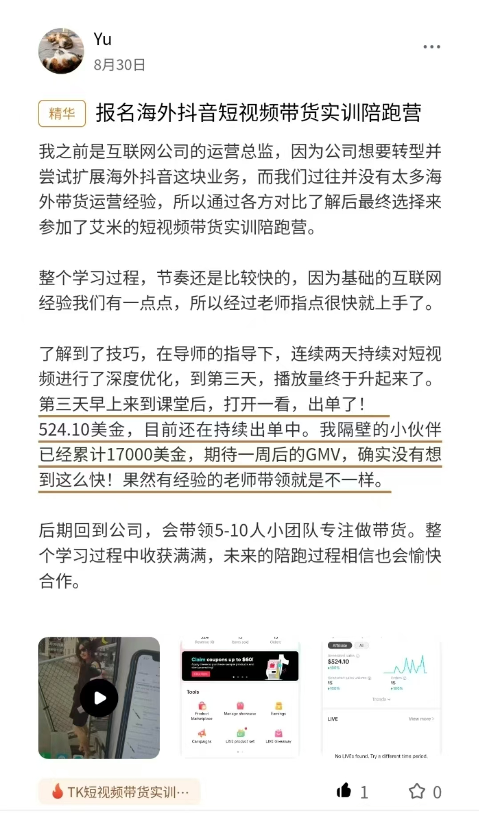

课程 · 陪跑
课程 · 陪跑
FILE 01 · 已交付 · 跨境变现
TK 变现课程体系
把账号搭建、选品、内容到出单拆成可跟做的课程，配陪跑群与实操答疑，陪到出单为止。
展开看流程
课程 · 陪跑FILE 01 · 已交付 · 跨境变现
TK 变现课程体系
把账号搭建、选品、内容到出单拆成可跟做的课程，配陪跑群与实操答疑，陪到出单为止。
展开看流程我的贡献 课程设计 / 内容制作 / 陪跑答疑
从输入到结果
- 拆解账号搭建与选品逻辑，做成可跟做的模块
- 录制分模块课程与实操演示
- 陪跑群内逐条答疑，跟到第一单为止
课程与陪跑记录可在资料图中核对；文中不写学员数与成交额，避免无法核验的数字。
- 交付物
- 分模块课程 + 陪跑群 + 实操答疑
- 验收方式
- 学员能否独立走完从搭号到出单的流程

